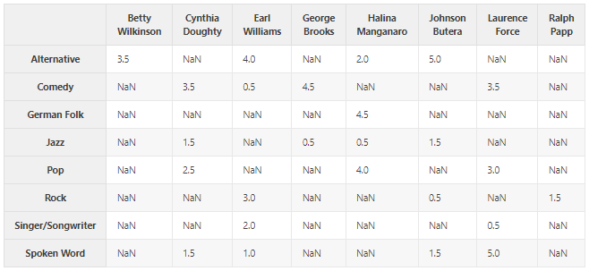
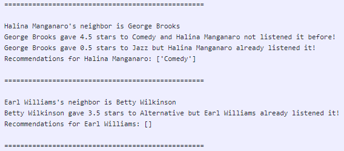
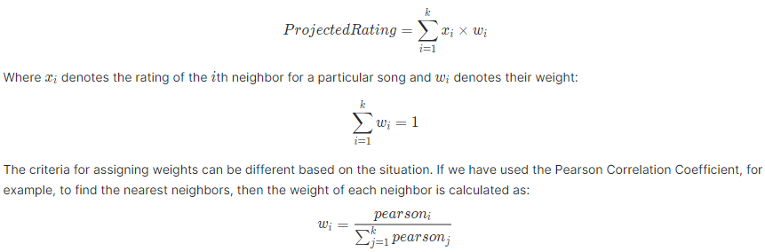

It will not be wrong to say that recommender systems are similarity hunters, depending on how we define "similarity" between "items". Given any reasonable similarity function between items, a recommender system presents relevant items to a user. This similarity function between 2 items could be common users that have interacted with those items in the past, similarity in their attributes, similarity in the context in which they are used, and so on.
In this tutorial, we will build a simple recommenders using different similarity methods.
Finding similarities between these users is the most crucial task because the accuracy and the quality of the recommendations rely majorly on them.
We are using 8 users and 8 songs. Feel free to increase this number if you want. We need to use the while loop because we want to get a list of unique 8 songs but the faker library sometimes generates duplicates. While loop will not exit if this happens and will generate the data again. We are putting a null probability of 60% which means 6 out of every 10 records will be null i.e. user didn't yet listen to that song band. Feel free to modify it so that this 60% can also be treated as a sparsity ratio.
def generate_data():
NUM_USER = 8
NUM_ITEM = 8
RATING_OPTIONS = np.arange(0,5.5,0.5)
while True:
users = [names.get_full_name() for i in range(NUM_USER)]
items = [fake.music_genre() for i in range(NUM_ITEM)]
data = pd.DataFrame(list(product(users, items)), columns=['USERS', 'ITEMS'])
PROBS = [0.6]
PROBS.extend([0.05]*(len(RATING_OPTIONS)-1))
PROBS = [i/sum(PROBS) for i in PROBS]
data['RATINGS'] = np.random.choice(RATING_OPTIONS, NUM_USER*NUM_ITEM, p=PROBS)
data['RATINGS'] = data['RATINGS'].astype('float32')
data = pd.pivot_table(data, index='ITEMS', columns='USERS', values='RATINGS')
data = data.replace(0, np.nan)
if len(np.unique(items))==NUM_ITEM:
return data, users
The generated data would look like this:

So how can we tell if two users have similar taste? One [simple] answer to that is the Minkowski Distance Metric: $d(x,y) = (\sum{i=1}^{k}{|x{i} - y_{i}|^{r}})^{1/r}$, where $x$ and $y$ are two records with $k$ features (ratings, in this case) and r ∈ {1,2,...,∞}.
def minkowski(ratings1, ratings2, r=2):
"""
Compute the Minkowski Distance between two users.
If `r` is not given, it defaults to Euclidian.
"""
mink_distance = 0
for key in ratings1:
if key in ratings2:
mink_distance += abs(ratings1[key] - ratings2[key])**r
mink_distance = mink_distance ** (1/r)
return mink_distance
Note:
The results would look like this:

Halina's neighbor is George and he gave 4.5 to Comedy and 0.5 to Jazz. Since Halina didn't yet listened to Comedy, this gets recommended to Halina.
On the other hand, Earl's neighbor is Betty and she gave 3.5 to Alternative. But since Betty already listed to this, no recommendation was provided.
The problem with the above method of calculating similarity is that some users, like to rate all their songs between 4 and 5 e.g. On the other hand, some users like bands in a binary fashion (either 1 or 4) e.g. People have similar taste but use different scales to rate bands.
We fix this problem, called grade inflation, by using the Pearson Correlation Coefficient:
$r = \frac{n(\sum xy)-(\sum x)(\sum y)}{\sqrt{[n\sum x^{2}-(\sum x)^{2}] [n\sum y^{2}- (\sum y )^{2}]}}$.
def pearson_corrcoef(x, y):
x_mean = x.mean()
y_mean = y.mean()
numer = np.sum( (x - x_mean) * (y - y_mean) )
denom = ( np.sum( (x - x_mean)**2 ) )**0.5 * ( np.sum( (y - y_mean)**2 ) )**0.5
return numer / denom
When we compare two people by using the number of plays of the 15 million tracks on ,say iTunes, mostly they will have shared zeros in common. However, we do not want to use these shared zeros when we are computing similarity, as they will affect the performance of our model for the worse.
Cosine similarity ignores 0-0 matches. It is defined as: $cos(x,y) = \dfrac{x.y}{{\lVert \mathbf{x}\rVert}\times{\lVert \mathbf{y}\rVert}}$, Where ⋅ indicates the dot product and ||x|| indicates the length of the vector x.
The problem is that we are relying on a single "most similar" person. Any quirk that person has is passed on as a recommendation. One way of evening out those quirks is to base our recommendations on more than one person who is similar to our user. For this we can use the k-nearest neighbor approach.

Congratulations!